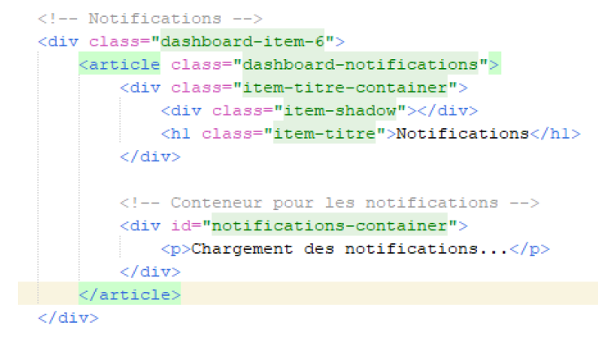

Etape 10 – Projet Intranet
La première étape consistait à mettre à jour les diagrammes UML afin de prendre en compte les notifications et leur gestion. Ensuite, la base de données a été adaptée pour stocker les notifications des utilisateurs. Enfin, un script PHP a été intégré avec une fonctionnalité AJAX pour permettre l'affichage dynamique des notifications.
1.1 Script AJAX pour récupérer les notifications
Voici le script JavaScript qui envoie une requête AJAX à "notifications.php" pour récupérer les notifications sous format JSON :

1.2 Code PHP pour récupérer les notifications
Le code PHP récupère les notifications pour un utilisateur connecté, triées par date décroissante. Si l'utilisateur n'est pas connecté, il renvoie une erreur au format JSON. Voici le script PHP :
1.3 Visuel actuel des notifications
Le visuel des notifications est encore basique. Le CSS n'a pas encore été optimisé, mais voici un aperçu de l'affichage actuel :